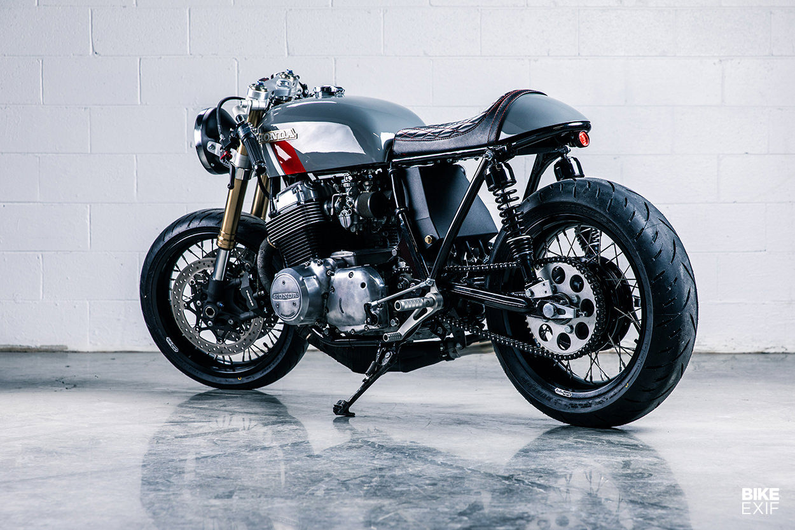
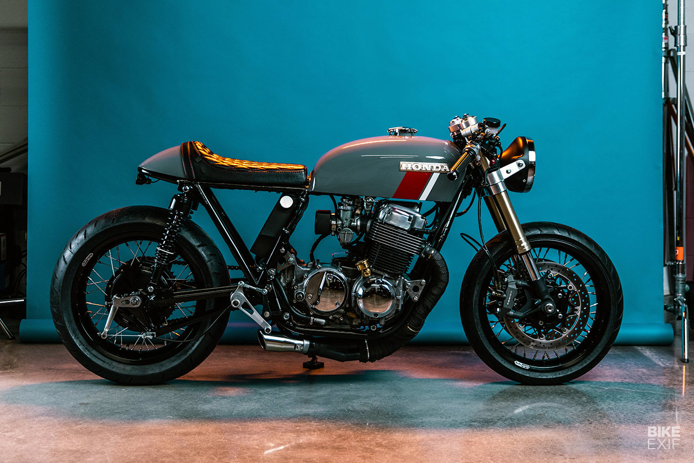
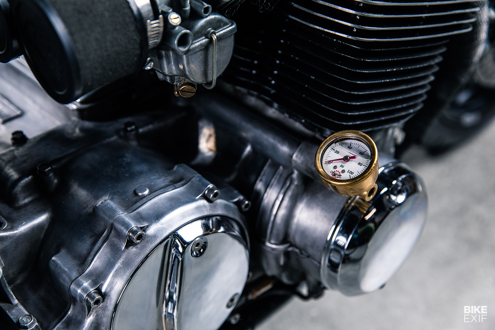

Cafe Racer = Art.
Nick lives in Nashville, Tennessee, where he works as a music producer and session guitarist. A friend got him onto his first bike, a Honda CB350, just a few years ago. He jumped in with both feet, teaching himself to maintain the little Honda via YouTube videos and online forums.
After a few months of daily riding, Nick needed something more capable and reliable—so he bought a Ducati Panigale 899. “It was a blast to ride,” he says, “but I quickly missed the character that the old Honda had. In the back of my mind I wanted to get back on a retro machine that didn’t perform perfectly all the time.”

This old CB750
“So one fateful day, I was talking to a client that I was editing and mixing a few songs for. He was telling me about his old CB750,
which he had been struggling to get running after a crash in the rain.”
He said he was considering selling the bike, so I offered instead to accept the bike as payment for the work I was doing for him.
They reached an agreement, and Nick soon had the 1975 Honda CB750 home and ready to diagnose.
“Originally my intention was to just rebuild the engine,” he tells us, “and make a few aesthetic changes to make it look like the
cool cafe racers I saw online.”
“But as I began to tear the bike down and draw up plans I quickly realized the potential the bike had, and the project really came to life.”
Start of Rebuilding
The motor already had 50,000 miles on it, so Nick treated it to a top end rebuild and honed the cylinders. He rebuilt the carbs too, then re-jetted them to run well with the UNI air filters. The exhaust is a four-into-one system from MAC Performance, capped off with a stubby silencer. “Oddly enough, one of the features on the bike that gets the most compliments is the low profile muffler,” Nick says, “which is actually an off the shelf part from my local auto parts store, and only cost about $13!”

Nick tore into the wiring too, ditching the stock harness since it had been tampered with over the years. The new system runs off a Motogadget m.unit and an Antigravity lithium-ion battery, all stashed discreetly in custom-made trays and under the seat hump. Nick went all-out when it came to the Honda’s running gear, swapping the front-end for a set of Suzuki GSX-R forks, held by billet aluminum triples from Cognito Moto. The rear shocks are now an inch longer than stock, giving the CB a more aggressive stance.

The overall effect is slick, well balanced and a brilliant first effort. “Being my first mechanical project ever,” says Nick, “I certainly struggled and messed up many steps along the way. But overall, it’s been very rewarding—especially riding around town and watching people react to a one-of-a-kind machine.”
Related Articles
-

Health Benefits Of Workout.